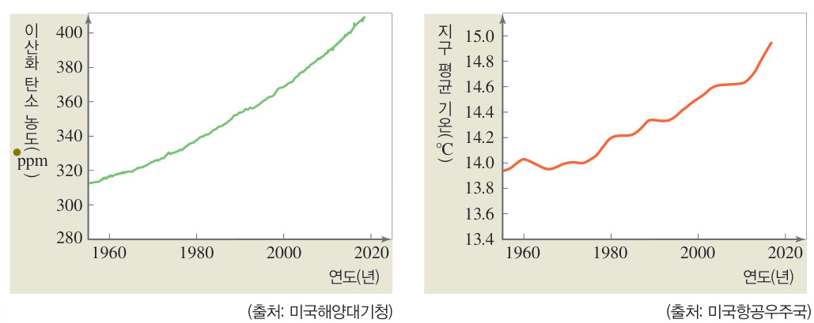

아, 왜 이렇게 더워지는 거야? 지구 에너지 저울에서 온실 기체를 늘리고 100 년을 흐르게 해 지구 평균 기온이 어떻게 새 복사 평형을 찾아가는지 확인하고, 온실 기체를 줄이는 실천 방안을 찾아보자.
🎯 이 단원을 배우면 — 지구 온난화를 지구 복사 평형의 관점으로 설명할 수 있다.
교과서지구 온난화는 어떻게 일어날까? 60쪽
지구에서 복사 평형은 그림 2-4와 같은 과정으로 일어난다. 지구로 들어오는 태양 복사 에너지를 100 %라고 할 때, 약 30 %는 우주로 반사된다. 지구는 지구로 들어오는 태양 복사 에너지의 약 70 %를 흡수하며, 흡수한 것과 같은 양의 지구 복사 에너지를 우주로 방출하여 복사 평형을 이룬다. 하지만 그 과정에서 지표가 방출하는 지구 복사 에너지는 일부만 우주로 바로 방출되고, 나머지는 대기에 흡수되었다가 다시 지표와 우주로 방출된다. 온실 효과는 대기가 지표로 다시 방출하는 복사 에너지 때문에 나타난다.
그림 2-4지구에서 복사 평형이 일어나는 과정 — 반사 30 %, 대기에 흡수 20 %, 지표에 흡수 50 %, 우주로 방출 70 %
1태양 복사 에너지 100 % 중 대기와 지표에서 반사되는 양은 %, 대기에 흡수되는 양은 %, 지표에 흡수되는 양은 %이다. 지구는 흡수한 %와 같은 양의 지구 복사 에너지를 우주로 방출한다.
지구 에너지 저울온실 기체를 늘리면 지구는 어떻게 될까?
온실 기체의 양을 바꾼 뒤 시간을 흐르게 해 보세요.
2온실 기체가 늘어나면 우주로 나가는 지구 복사 에너지가 잠시 흡수량보다 적어지므로 지구 평균 기온이 . 기온이 높아지면 방출량이 다시 늘어 을 이룬다.
해 보기 · 자료 해석지구 평균 기온이 높아지는 원인 알아보기 61쪽
최근에는 인간 활동의 영향으로 대기 중으로 방출되는 이산화 탄소와 같은 온실 기체의 양이 증가하고 있다. 대기 중에 증가한 온실 기체는 지구 복사 에너지를 더 많이 흡수하고, 더 많은 복사 에너지를 지표로 방출한다. 그 결과 온실 효과가 강화되어 지구의 평균 기온이 높아지는데, 이를 지구 온난화라고 한다.

61쪽대기 중 이산화 탄소 농도 변화(출처: 미국해양대기청)와 지구 평균 기온 변화(출처: 미국항공우주국)
1그래프에서 대기 중 이산화 탄소 농도가 할수록 지구 평균 기온도 .
💬대기 중 이산화 탄소 농도 변화와 지구 평균 기온 변화 사이의 관계를 지구 복사 평형으로 설명해 보자.
지구 온난화의 영향 최근에는 지구 온난화의 영향으로 해수면이 상승하여 육지가 줄어들고, 기상 이변이 일어나며, 생태계가 변하는 등 지구 환경에 큰 변화가 생기고 있다.
🧩 세 번째 열쇠 (61쪽)
( )는 대기의 온실 효과가 강화되어 나타나는 현상이다.
참여 · 홍보온실 기체를 줄이는 실천 방안 찾기 62쪽
62쪽태양 에너지 사용하기 · 쓰레기 분리수거 · 나무 심기 · 자전거 타기
모둠 구성원끼리 역할을 분담하여 다양한 실천 방안을 모은다.
실천 방안을 가장 잘 홍보할 수 있는 방법(포스터, 사진, 기타)을 찾는다.
홍보 자료를 만들어 전시하거나 발표한다.
💬우리 모둠의 실천 방안 3 가지와 홍보 문구를 써 보자.
🔑열쇠 모으기 지구 기온은 어떻게 변하고 있을까? '기권, 복사 평형, 온실 효과, 지구 온난화'를 사용하여 내 생각을 써 보자.
스스로 확인하기60쪽 학습 목표를 달성했는지 확인해 보자 61쪽
1지구는 전체적으로 흡수하는 태양 복사 에너지양과 방출하는 지구 복사 에너지양이 같아 을 이룬다.
2온실 효과가 강화되어 지구 평균 기온이 높아지는 현상을 라고 한다.
3과학적 사고력 시베리아나 알래스카의 항상 얼어 있는 땅(영구 동토)에는 탄소가 많이 묻혀 있다. 지구 온난화로 이 땅이 녹아 땅속 탄소가 온실 기체로 바뀌어 대기 중으로 방출될 때 일어날 수 있는 변화를 예상해 보자.
개념 확인점점 더워지는 지구
그림 2-4에서 A: 대기와 지표에서 반사, B: 대기에 흡수, C: 지표에 흡수, D: 우주로 방출되는 지구 복사 에너지 전체, E: 대기에서 지표로 방출
1⑴ A는 %이다. ⑵ B + C는 %이다. ⑶ D는 %이다. ⑷ 지구가 흡수하는 태양 복사 에너지의 양은 %이다. ⑸ 지구가 방출하는 지구 복사 에너지의 양은 %이다. ⑹ A~E 중 온실 효과를 일으키는 것은 이다.
2온실 효과가 강화되어 지구의 평균 기온이 높아지는 현상을 라고 한다.
3최근 지구는 대기 중에 증가한 의 영향으로 대기의 온실 효과가 계속 하고 있다.
✔옳으면 O, 옳지 않으면 X
⑴ 이산화 탄소는 온실 기체이다.
⑵ 최근 인간 활동의 영향으로 온실 기체의 양이 감소하고 있다.
⑶ 지구의 평균 기온이 점점 증가하고 있다.
스스로 정리하기점점 더워지는 지구 65쪽
3온실 효과와 지구 온난화
⑴ : 대기의 영향으로 대기가 없을 때보다 지구 평균 기온이 높게 나타나는 현상 ⑵ : 대기 중 온실 기체가 증가하여 온실 효과가 강화됨으로써 지구 평균 기온이 높아지는 현상 ⑶ 그림 2-4에서 지구로 들어오는 태양 복사 에너지 A, 반사되는 B, 지구가 방출하는 지구 복사 에너지 C 사이의 관계:
✔온실 효과에 대한 설명에서 알맞은 말을 고르시오.
⑴ 온실 기체에는 ( ), 메테인 등이 있다.
⑵ 대기는 지구 복사 에너지를 흡수한 후 지표로 다시 방출하여 지구의 평균 기온을 ( ).
⑶ 대기 중 온실 기체가 ( )하면 지구 온난화가 일어난다.
평가 기준
스스로 평가
지구 온난화를 지구 복사 평형의 관점으로 설명할 수 있다.
온실 기체를 줄이는 실천 방안을 찾아 참여할 수 있다.
제출학생 정보 · 제출하기
모든 활동을 마친 뒤 제출하면 전체가 한 번에 채점되고 피드백이 나타나요. 답안은 선생님 스프레드시트(중3 탭)에 기록돼요.